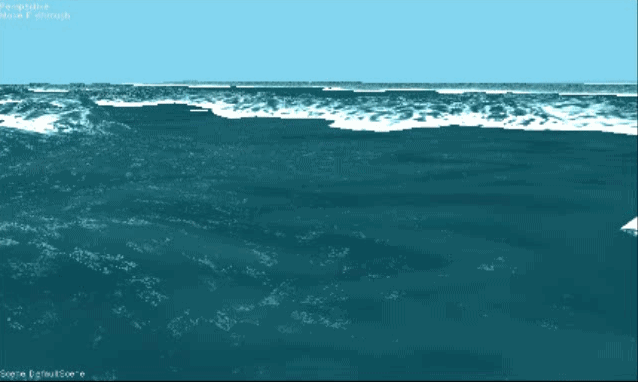
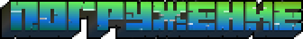
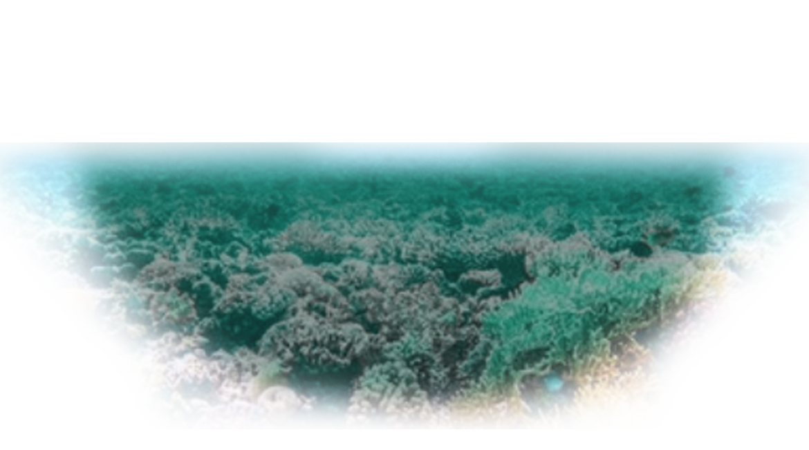
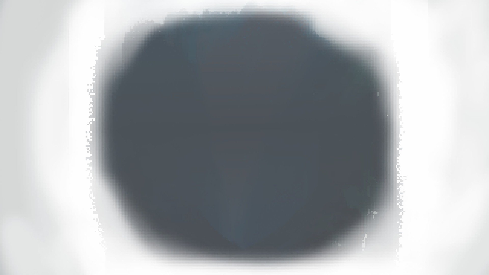
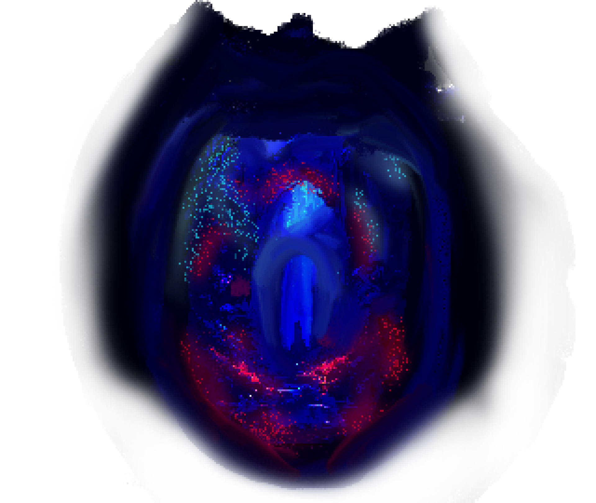
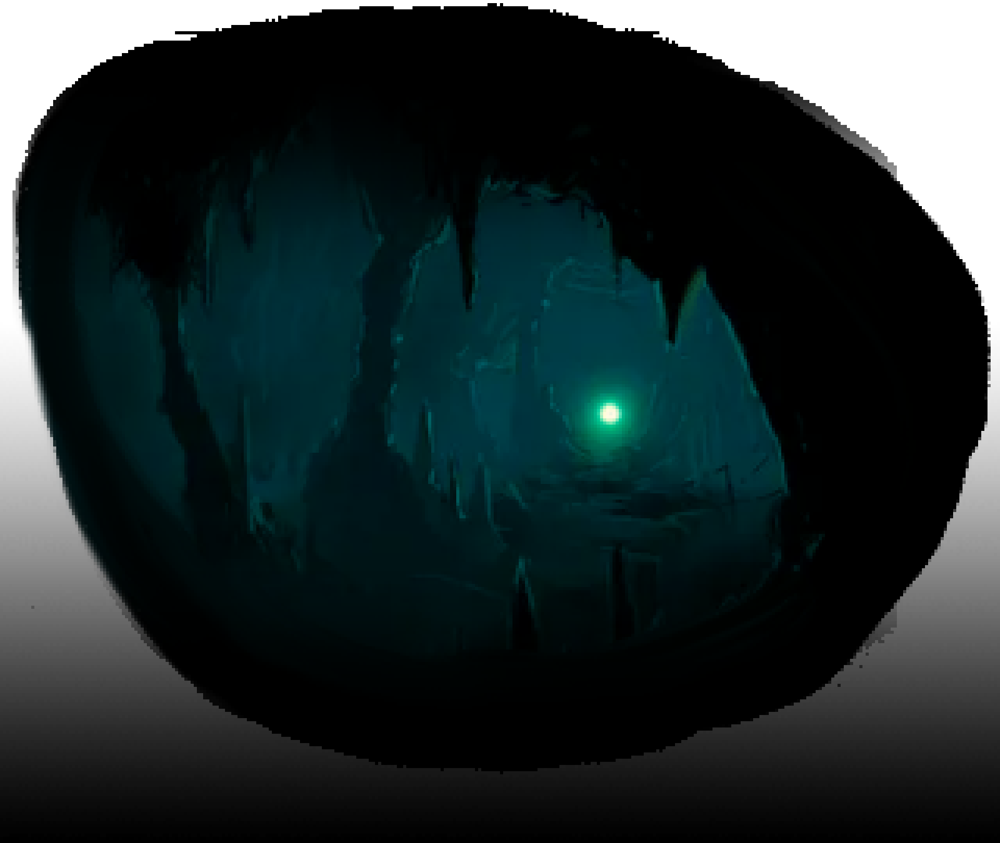

Я - Максим, Front-end разработчик с тягой к креативу и нестандартным решениям.

Я уверенно владею следующими инструментами фронтенда:

Я уверенно понимаю технический английский как в письменной, так и в устной форме — это помогает мне работать с документацией и обучающими материалами без ограничений.
Хорошо ориентируюсь в графических редакторах Photoshop и GIMP, что пригодится для работы с визуальной частью интерфейсов.
Также быстро осваиваю новые инструменты и подходы, ведь постоянное развитие — важная часть моей работы как разработчика.

Мой арсенал навыков помогает воплощать как профессиональные, так и дерзкие идеи.
Я — не просто разработчик, а восьмирукий энтузиаст, готовый схватиться за всё сразу и довести до блеска.
Если вы почувствовали, что нам по пути — ниже вы найдёте, как со мной связаться. Буду рад пообщаться!
